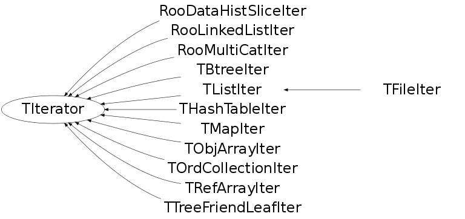

class TIterator
TIterator Iterator abstract base class. This base class provides the interface for collection iterators.
Function Members (Methods)
This is an abstract class, constructors will not be documented.
Look at the header to check for available constructors.
public:
| virtual | ~TIterator() |
| static TClass* | Class() |
| virtual const TCollection* | GetCollection() const |
| virtual Option_t* | GetOption() const |
| virtual TClass* | IsA() const |
| virtual TObject* | Next() |
| virtual bool | operator!=(const TIterator&) const |
| TObject* | operator()() |
| virtual TObject* | operator*() const |
| virtual TIterator& | operator=(const TIterator&) |
| virtual void | Reset() |
| virtual void | ShowMembers(TMemberInspector& insp) |
| virtual void | Streamer(TBuffer& b) |
| void | StreamerNVirtual(TBuffer& b) |
Class Charts
{kind=link}
{kind=link}
{kind=link}
{kind=link}

Function documentation
bool operator!=(const TIterator& ) const
Compare two iterator objects. For backward compatibility reasons we have to provide this default implementation.
TObject * operator*() const
Return current object or nullptr. For backward compatibility reasons we have to provide this default implementation.
const TCollection * GetCollection() const
void Reset()